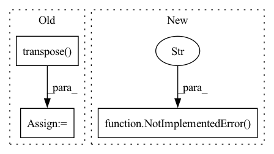

Pattern ID :10551
Before Change
// L x B x D -> B x D x L
// x = x.permute(1, 2, 0)
x = x.transpose( -1, -2) // (B D L)
if padding_mask is not None:
x = x * (1.0 - padding_mask.unsqueeze(1).type_as(x))
assert not self.bidirectional or state is None, "Bidirectional EMA does not support incremental state"
if state is not None:
saved_state = self._get_input_buffer(state)
if "prev_state" in saved_state:
h = saved_state["prev_state"]
else:
h = None
out, h = self.step(x, seq_len, hx=h)
saved_state["prev_state"] = h
self._set_input_buffer(state, saved_state)
// B x D -> 1 x B x DAfter Change
// assert not self.bidirectional or state is None, "Bidirectional EMA does not support incremental state"
if state is not None:
raise NotImplementedError(
"MultiHeadEMA module does not support state passing in this repository."
"Use S4D for more functionality such as state passing and better performance."
)
else:
k = self.kernel(L) // (H L)
l_fft = L
s = 0In pattern: SUPERPATTERN
Frequency: 3
Non-data size: 3
Instances Fragment ID: 36722805
Project Name: hazyresearch/state-spaces
Commit Name: b766e8779997046a5b3bad674e89625e8963b0d2
Time: 2022-11-18
Author: albertfgu@gmail.com
File Name: src/models/sequence/ss/ema.py
M Class Name: MultiHeadEMA
N Class Name: MultiHeadEMA
M Method Name: forward(4)
N Method Name: forward(4)
M Parent Class: nn.Module
N Parent Class: nn.Module
M File Name: src/models/sequence/ss/ema.py
N File Name: src/models/sequence/ss/ema.py
M Start Line: 166
M End Line: 223
N Start Line: 112
N End Line: 158
Before Change
def compute_alphas(self):
// Construct matrix for alpha calculation
objPts_w = np.array(self.objPts).transpose() [0]
mat_objPts_w = np.concatenate((objPts_w, np.array([np.ones((self.n))])), axis=0)
contPts_w = self.contPts_w.transpose()
mat_contPts_w = np.concatenate((contPts_w, np.array([np.ones((4))])), axis=0)
After Change
contPts_w = torch.cat((contPts_w, batched_ones), dim=-1)
if linear_least_square:
NotImplementedError("Linear least square method is not implemented yet." )
// Calculate Alpha TODO: CHECK if logic is correct, or change to general method
alpha = torch.bmm(torch.linalg.inv(contPts_w), objPts) // simple method
alpha = alpha.transpose()
else: Fragment ID: 36722807
Project Name: pypose/pypose
Commit Name: f6e65aa4066f56f1715c9ddfd89f5307c1ebe043
Time: 2023-02-24
Author: ztzhan1108@gmail.com
File Name: pypose/module/pnp.py
M Class Name: EPnP
N Class Name: EPnP
M Method Name: compute_alphas(4)
N Method Name: compute_alphas(1)
M Parent Class:
N Parent Class:
M File Name: pypose/module/pnp.py
N File Name: pypose/module/pnp.py
M Start Line: 127
M End Line: 140
N Start Line: 131
N End Line: 158
Before Change
psi = self.pool(cmo)
out = self.fc(grad * psi)
out = out.transpose( 0, 1)
// assemble
return out
After Change
Args:
x ([type]): [description]
raise NotImplementedError(
"Gradient through Jacobi formulat not implemented for backflow orbitals" )
Fragment ID: 36722810
Project Name: nlesc-jcer/qmctorch
Commit Name: 30dbeefc245dd82b434a169a29afba38c2c66e32
Time: 2021-04-13
Author: nicolas.gm.renaud@gmail.com
File Name: qmctorch/wavefunction/slater_jastrow_backflow.py
M Class Name: SlaterJastrowBackFlow
N Class Name: SlaterJastrowBackFlow
M Method Name: gradients_jacobi(3)
N Method Name: gradients_jacobi(3)
M Parent Class: SlaterJastrowBase
N Parent Class: SlaterJastrowBase
M File Name: qmctorch/wavefunction/slater_jastrow_backflow.py
N File Name: qmctorch/wavefunction/slater_jastrow_backflow.py
M Start Line: 210
M End Line: 229
N Start Line: 208
N End Line: 209